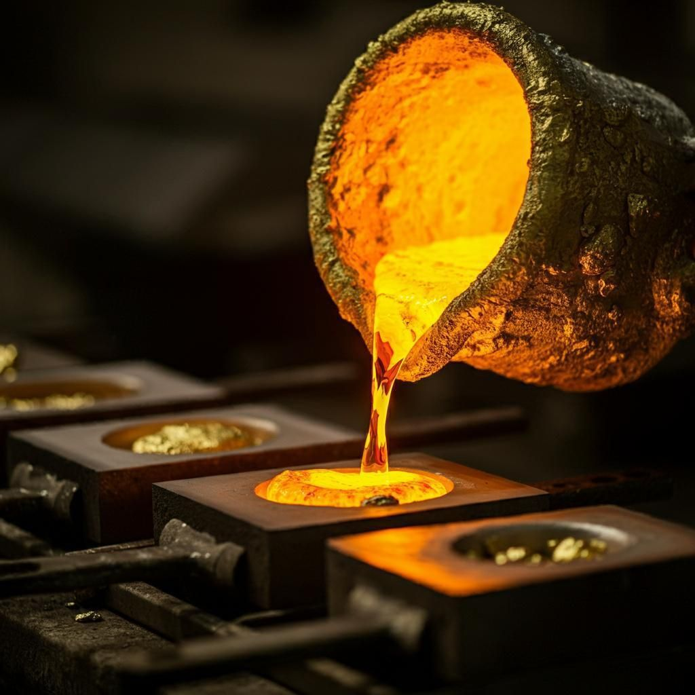
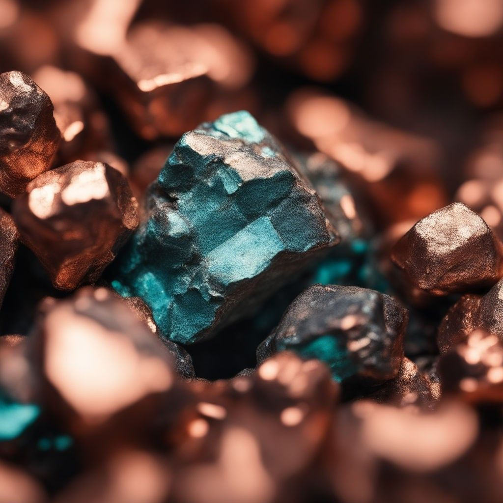
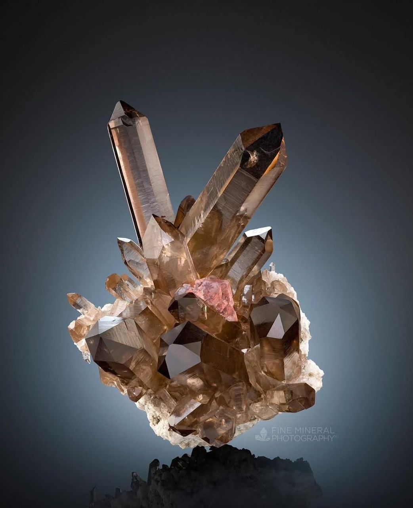
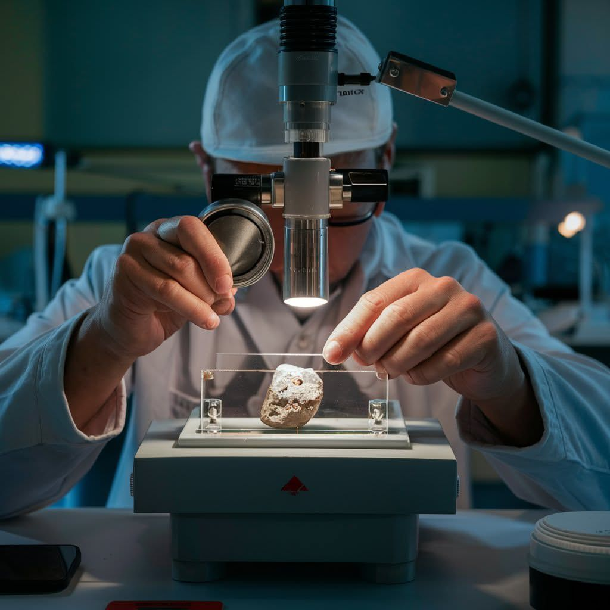

What we produce
Our mineral portfolio
Each mineral is extracted, processed, and certified under strict Swiss quality controls.

Gold
Our 99.7% investment-grade gold is refined on-site and hallmarked to LBMA (London Bullion Market Association) standards. Trusted by European central banks, private vaults, and commodity traders since 1881.

Copper
High-grade copper ore bodies at our Valais and Uri sites yield 18,400 tonnes of refined concentrate annually. Supplied to European electrical cable, electronics, and construction manufacturers.

Quartz
Precision quartz from Alpine veins is graded for scientific instrumentation, semiconductor manufacturing, and high-end watchmaking supply chains. A small but high-value portion of our portfolio.

Ore Concentrate
Mixed mineral ore concentrate, a by-product of primary extraction, is blended and sold to European smelters. Careful stockpile management ensures consistent quality across every production cycle.
Quality assurance
Every bar. Every batch. Tested.
Our on-site analytical laboratory runs fire assay and ICP spectrometry tests on every production batch. Independent third-party verification by SGS Switzerland occurs quarterly on all gold outputs.
- LBMA Good Delivery certified gold refinery
- ISO 17025 accredited on-site laboratory
- 100% batch traceability from pit to product
- Quarterly SGS Switzerland independent audits
- Conflict-free mineral certification (OECD aligned)
"Our certification process begins at the ore face, not the assay office. Every tonne is documented before it moves."